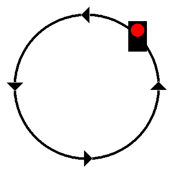

Signalbuch-Online
Signal Sh 3 – Kreissignal
Informationen zur Bedeutung, Beschreibung und Anwendung des Sh 3-Signals im Bahnbetrieb.
(1)
Bedeutung
Sofort halten.
(2)
Beschreibung

Tageszeichen: Eine rot-weiße Signalfahne, irgendein Gegenstand oder der Arm wird im Kreis geschwungen.
Nachtzeichen: Laterne, möglichst rot abgeblendet oder ein leuchtender Gegenstand wird im Kreis geschwungen.

(3)
Anwendung
Das Kreissignal wird gegeben, wenn ein Zug oder eine Rangierfahrt sofort zum Halten gebracht werden muss. Wenn es zweifelhaft ist, ob der Zug oder die Rangierfahrt das Signal wahrnehmen werden, ist auch das Horn- und Pfeifsignal (Sh 5) anzuwenden.